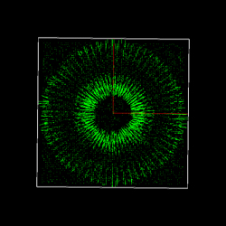

Description
This project addresses the problem of noise filtering using the tensor voting approach described in the lecture (or the algorithms described in the paper" N-Dimensional Tensor Voting" where you set N=3) to reject outliers inherent in a noisy 3D point set, which may be sparse (obtained from stereo matching, for instance) or quasi-dense (obtained from a laser range finder). The input consists of a set of noisy 3D points. The output of the tensor voting system is the corresponding denoised point set. We also provide the viewworld files of all the inferred tensor for the purposes of visualization. Below are the images showing different views of some testing data sets.
Example
| Crown | noisy image | ||
|---|---|---|---|
| inferred tensor | |||
| denoised image | |||
| mannequin | noisy image | ||
| inferred tensor | |||
| denoised image | |||
| Theo | noisy image |
||
| inferred tensor |  |
||
| denoised image | |||
| Peanut | noisy image | ||
| inferred tensor | |||
| denoised image | |||
| unknown1 | noisy image | ||
inferred tensor |
 | ||
denoised image |
|||
| unknown2 | noisy image | ||
inferred tensor |
 |
||
| denoised image | |||